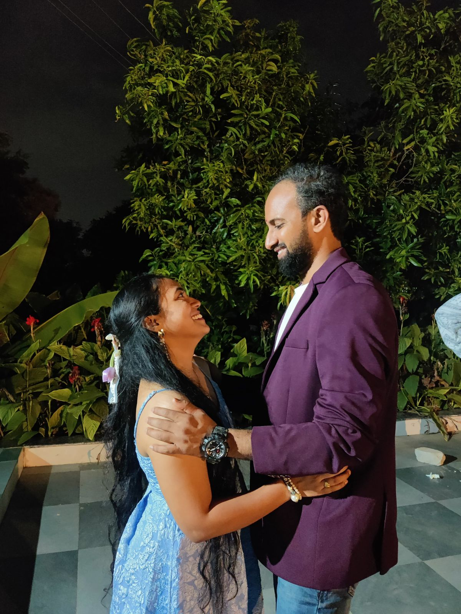
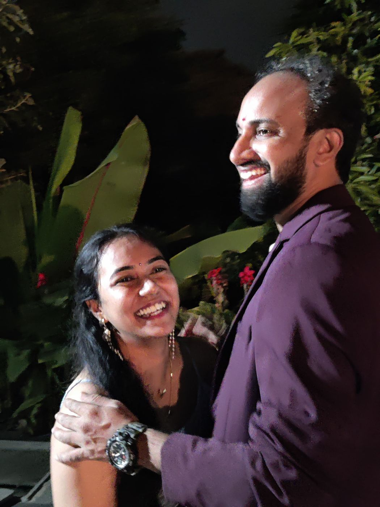
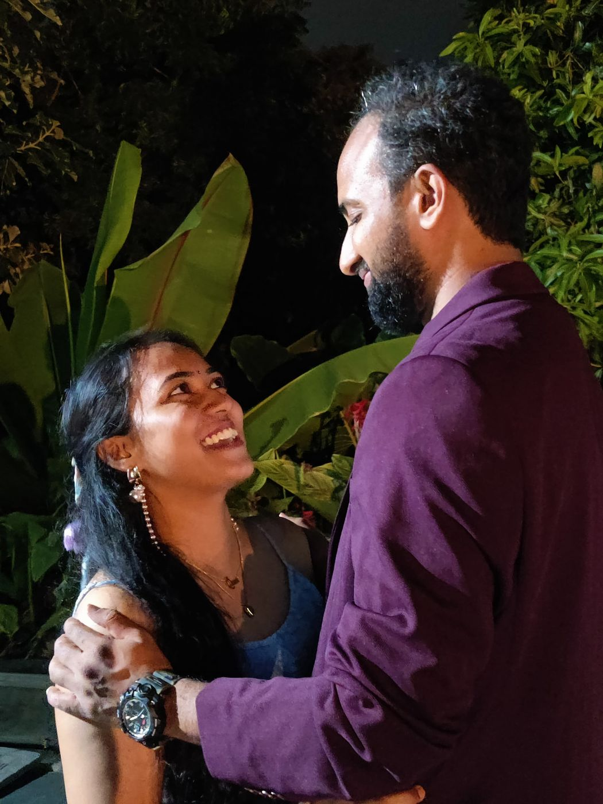
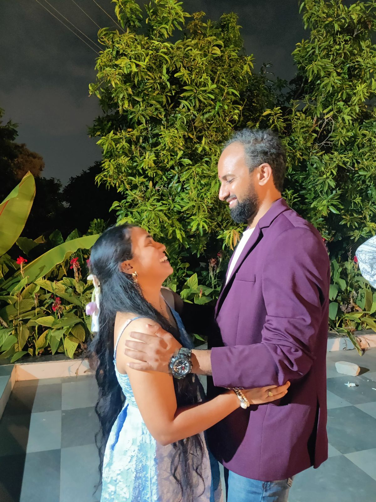

Sunday, 1 November
Reception
7:00 pm onwards
Our wedding is on Friday, 30 October at Shivashakti Mandapam, Vijayawada, with the muhurtham at 11 am.
The reception is on Sunday, 1 November at 7 pm.

An invitation from Rohith & MrunaliniTap the moon to open
invite you to their wedding reception
Sunday, 1 November
Save the evening
1 November Sunday · 7 pm onwardsAfter the wedding in Vijayawada, we're celebrating in Hyderabad




We'd love to see you there.
With love, Rohith & Mrunalini